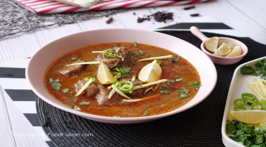

Mutton Nihari

Description
Nihari is a traditional South Asian dish that originated in the Indian subcontinent,
particularly in the region of Delhi. It is a stew made from slow-cooked beef
or lamb, and is typically seasoned with a mixture of
spices such as coriander, cumin, garam masala, ginger, and garlic.
The meat is cooked until it is tender and falls off the bone, and the sauce is thick and flavorful.
Nihari is often served with flatbread, such as naan or roti, and can be garnished with fresh cilantro,
lemon juice, and julienned ginger. The dish is a staple in the cuisine of the
Indian subcontinent and is enjoyed by people from many different cultures and backgrounds.
Ingredients
- 1 Kg meat
- 2 tbsp refined oil3-4 Green cardamoms1 tsp whole cinnamon
- 3-4 Green cardamoms1 tsp whole cinnamon
- 1 tsp whole cinnamon
- 2 black cardamoms
- 2-3 Bay leaves
- 1 tsp turmeric powder
- 1/4 cup water
- 1 tsp ginger-garlic paste
- 1 tsp coriander powder
- 1 tsp red chilli powder
- 1 tsp garlic (ground), fried
- 1 tsp onion (ground), fried
- 3 tbsp yogurt (beaten)
- 2 tsp gulab jal
- 2 tsp garam masala
- 1/2 tsp nutmeg-cardamom powder
- 1/2 tsp saffron, soaked
- Salt,to taste
- Wheat dough (for dum)
- for garnishing fresh coriander and ginger juliennes
Steps
- Heat oil in a pan and add green cardamom, cinnamon, cloves, black cardamom and bay leaves.
- Add the meat and saute till lightly fried.
- Add salt and turmeric and mix well.
- Pour in the water, cover the pan and cook.
- When it starts boiling, add ginger- garlic paste, coriander powder, red chilli, garlic paste and onion paste.
- Mix well and add yoghurt, gulab-jal, garam masala, nutmeg and cinnamon powder and saffron.
- Cover and cook for 2-3 minutes.
- Now transfer the meat in a heavy bottom pan and strain the gravy.
- Add a few drops of itar and cover the pan.
- Seal it with the wheat dough and cook on slow fire.
- Once done, garnish with fresh coriander and ginger juliennes and serve.
Return to Homepage